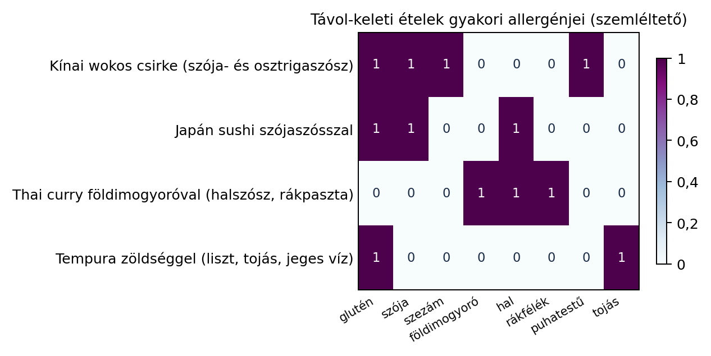

Egy ázsiai étteremben vagy egy nemzetközi konyhát viszünk a menüre: a vendég wokos tésztát, csípős curry-t vagy friss sushit kér. A szakács nem elégedhet meg annyival, hogy „érdekes fűszereket” használ. A távol-keleti konyhákban a gyorsaság, a nagyon magas hőmérséklet, a nyers halak és az erős allergének (szója, szezám, földimogyoró, rákfélék) egyszerre jelentenek élményt és élelmiszer-biztonsági kockázatot. Aki itt hibázik, az vagy rontja az étel állagát, vagy a vendég egészségét veszélyezteti.
A cél az, hogy a wokos pirítást, a curry-készítést és a japán nyershalas ételeket úgy tudd elkészíteni, hogy a technológia pontos legyen, a hőmérsékleti és allergénszabályokat pedig betartsd.
Képzeld el a wokot: óriási hőfokon dolgozó, hajlított acélserpenyő, alatta erős láng, fölötte gőz és illat. A zöldség és a hús nem párolódik, hanem gyorsan pirul: kívül színesedik, belül szaftos marad. A sushi hűtött vitrinben vár, a hal szeletelt, a rizs ecetes, a wasabi és a szójaszósz külön tálkában. A curry lassan, illatos gőzben rotyog, a kókusztej és a fűszerpaszta rétegei érezhetők.
A távol-keleti konyha tehát nem „egyféle kínais”. Több nagy hagyományú konyhát fog össze: a kínai woktechnikát, a japán minimalista pontosságot, a thai és vietnámi friss fűszerességet, valamint az indiai masala- és currykultúrát (földrajzilag az indiai konyha dél-ázsiai; a könyv itt is tárgyalja).
Definíció. Wok alatt a homorú, magas hőt jól vezető serpenyőt és a hozzá tartozó gyors, magas hőfokú pirítási technikát értjük. A francia szaknyelvben nincs pontos megfelelője; a nemzetközi szaknyelv stir-fry-nak (gyors pirítás) nevezi.
Definíció. A curry nem egyetlen fűszer, hanem fűszerkeverékből vagy fűszerpasztából készült, rendszerint hagymás, folyadékkal és/vagy kókusztejjel felöntött mártásos egytálétel. A curry lehet egészen híg, leveses, vagy sűrű, krémes mártású.
Definíció. A sushi ecetes rizsből és nyers halból, zöldségből, tojásból vagy más feltétből készült, hideg japán étel. A sashimi rizs nélküli, vékonyan szeletelt nyers hal. A tempura japán, nagyon könnyű bundázás: liszt, tojás és jeges víz épp csak összekevert, csomós masszája, forró olajban kisütve; a ramen pedig gazdag tésztaleves.
Rendszer. A távol-keleti konyhákat az alábbi táblázat foglalja össze:
| Konyha | Jellemző technika | Gyakori alapanyagok | Fő allergén kockázat |
|---|---|---|---|
| Kínai | wok, gyors pirítás, gőzölés | szójaszósz, gyömbér, rizsbor, szezámolaj | glutén, szója, szezám |
| Japán | sushi, sashimi, tempura, ramen | dashi, rizsecet, szójaszósz, wasabi | hal, puhatestű, szója, glutén |
| Thai/vietnámi | friss fűszerezés, wok, curry | halszósz, kókusztej, rizstészta, citromfű | hal, földimogyoró, rákfélék |
| Indiai | masala, curry, tandoori, lassú főzés | basmati rizs, joghurt, ghee, csicseriborsó | tej, diófélék, mustár |
Rizsfajták. A kínai és thai ételekhez illatos jázminrizs illik, az indiaihoz hosszú szemű basmati, a sushihoz rövid szemű, kerek sushi rizs, a vietnámi ételek gyakori köretalapja pedig a rizstészta (nem rizsfajta, hanem rizslisztből készült tészta). A rizs vízfelvétele receptenként változik; a technológiai lapban mindig a saját, lemért értéket használd.
Mise en place. A wokban minden nagyon gyorsan sül. Ezért először minden alapanyagot felszeletelünk, kimérünk és a tűzhely mellett, külön tálkákban készítünk össze. Ez a mise en place a wokos munka alapja.
A wok homorú alakja miatt a hő nem egyenletes: a láng fölötti (1) középső zóna a legforróbb, a (2) oldalfal a perem felé hűvösebb. A mise en place tálkái a felhasználás sorrendjében állnak: hús, kemény zöldség, puha zöldség, aromák, szósz.
Az alsó képsor számozása a fenti lépésekével egyezik. A wokban minden másodpercek alatt történik, ezért a tálkáknak a pirítás előtt készen kell állniuk: ha közben kezdesz vágni, a hús megég vagy kiszárad. A HTML-kiadásban a wok zónái és a tálkák kiemelhetők, a lépések egyenként megnézhetők.
Higiénia. A nyers hús után használt eszköz, vágódeszka és edény ne érintkezzen a kész étellel. A wokban is előfordulhat keresztszennyeződés, ha a nyers húst ugyanazzal az eszközzel keverjük, amellyel a kész ételt tálaljuk.
A sushi és sashimi az egyik legnagyobb élelmiszer-biztonsági kihívás a vendéglátásban.
Kockázat. A nyers halban élő kórokozók és paraziták szaporodhatnak, különösen, ha a hal nem kellően friss, vagy a hőmérsékleti lánc megszakad. A sérülékeny csoportok (várandós, kisgyermek, idős, legyengült immunrendszerű) számára a nyers hal fogyasztása nagyobb kockázattal jár.
Szabály. Nyers halat csak kifogástalan frissességű, erre a célra engedélyezett forrásból származó, szakszerűen hűtött vagy kellően fagyasztott halból szabad készíteni. A nyersen fogyasztott halat – ha a beszállító nem igazolja, hogy parazitamentes (pl. ellenőrzött tenyésztésből származik) – a felhasználás előtt mélyhűteni kell (tanulási érték: legalább −20 °C-on 24 órán át vagy −35 °C-on 15 órán át; ellenőrizendő: 853/2004/EK III. melléklet VIII. szakasz, beszállítói igazolás). A konyhán csak akkor készítsünk nyers halat, ha a beszállító igazolni tudja a felhasználás feltételeit.
Kritikus pont. A nyers halas ételek készítésekor a hűtőlánc, az elkülönített munka és a rövid felhasználási idő a legfontosabb. A halat feldolgozás előtt és után 0–2 °C körüli hőmérsékleten kell tartani (ellenőrizendő: saját HACCP-terv hőmérséklete). A nyers halhoz külön deszkát, kést és kesztyűt használjunk. A kész sushit tálalásig hűtött vitrinben tartsuk, és a tálalást követően ne hagyjuk szobahőmérsékleten.
Tilos. Otthoni gyakorláskor nyers halas ételt csak a tankonyhán vagy oktatói felügyelettel készítsünk; otthon csak akkor, ha a beszerzési, hűtési és feldolgozási feltételek teljes körűen adottak.
A curry-t az indiai és thai hagyomány szerint fűszerpasztából vagy fűszerkeverékből építjük fel. A fűszerpasztát (pl. vörös vagy zöld curry paszta) először zsiradékban, hagymával és esetleg gyömbérrel, fokhagymával „kinyitjuk”: addig pirítjuk, amíg illata felszabadul. Ezután adjuk hozzá a húst vagy zöldséget, majd a folyadékot (kókusztej, alaplé vagy paradicsompürés lé), és alacsony hőfokon, fedő alatt vagy fedő nélkül rotyogtatjuk.
Szabály. A curry fűszerpaszta pirítása közepes hőfokon, állandó keverés mellett történjen; ha a paszta leég, keserű lesz az étel. A csirkehúst tartalmazó curryben a baromfi maghőmérsékletét ellenőrizni kell: legalább 75 °C a biztonságos maghőmérséklet (ellenőrizendő: NÉBIH-útmutató / HACCP-terv).
Ázsiai alapanyagokban gyakori a rejtett allergén. A szójaszósz általában búzát is tartalmaz, ezért glutén-allergén. Az osztrigaszósz puhatestűből, a halszósz halból készül. A szezámolaj és szezámmag, a földimogyoró- vagy mogyoróvaj, a rákpaszta (például a thai currykrémekben) szintén gyakori allergén.
Allergén. A távol-keleti ételek készítésekor mindig ellenőriznünk kell a gyártói/éttermi szószok és paszták összetételét. A leggyakoribb allergének: glutént tartalmazó gabonafélék, szójabab, szezámmag, földimogyoró, diófélék, halak, rákfélék, puhatestűek, tej, tojás, zeller, mustár, szulfitok, csillagfürt. A vendég tájékoztatását pontos, írásos allergénlista alapján végezd. Allergiás vendég részére soha ne ígérj „allergénmentes” garanciát, csak az elkülönített eljárást és a gondos összetevő-ellenőrzést tudjuk nyújtani.
Az alábbi mátrix szemlélteti, milyen allergének fordulnak elő gyakran az egyes ételekben:

Az 1 azt jelenti, hogy az étel az adott összetevőt gyakran tartalmazza; a 0 azt, hogy az adott receptváltozatban általában nincs benne. Figyeld a rejtett forrásokat: a szójaszósz miatt a sushi és a wokos csirke glutént is tartalmaz, az osztrigaszósz puhatestű, a thai curryben a halszósz hal, a rákpaszta pedig rákféle (nem puhatestű!). A tempura bundája liszt és tojás; a szója és a szezám csak a mártótól függ. A konkrét receptnél mindig a tényleges alapanyagok számítanak.
A távol-keleti ételek rizsét és fűszeres mártását is receptúra szerint számítjuk át. A technológiai lapokon 10 adagra adjuk meg az anyaghányadot. Ha a konyhán 4 adagot kell készíteni, a mennyiségeket egyenes arányossággal számítjuk át.
Adott. A wokos csirkemellhez 10 adagra 600 g nyers jázminrizst használunk. A vízfelvétel 1,75-szeres, azaz 1 g rizshez 1,75 ml vizet számolunk. Keresett: mennyi rizst és vizet használjunk 4 adaghoz?
Képlet. Az egy adagra jutó rizs mennyisége:
Négy adagra:
A víz mennyisége:
Ellenőrzés. 240 g : 600 g = 0,4 = 4/10, tehát a 4 adagnyi rizs a 10 adagnyi 40 %-a, a számítás helyes.
Összefüggés. A fűszerpaszták és mártások esetében ugyanígy járunk el: ha 10 adaghoz 80 g curry paszta kell, akkor 4 adaghoz 32 g paszta szükséges.
Adagszám és adagsúly. 10 adag; 1 adag kész étel kb. 250 g wokos csirke-zöldség + kb. 165 g főtt jázminrizs (60 g nyers), összesen kb. 415 g (ellenőrizendő: próbafőzés).
Allergének. Glutén, szójabab, szezámmag, puhatestűek (a szójaszósz és osztrigaszósz miatt). A gluténmentes változathoz gluténmentes szójaszószt (pl. tamari) használjunk.
Eszközök és gépek. Wok vagy magas falú serpenyő, nagy láng, rizsfőző vagy lábas, vágódeszka, kés, tálkák a mise en place-hez, maghőmérő, kanál.
Anyaghányad 10 adagra
| Nyersanyag | Mennyiség 10 adagra | Megjegyzés |
|---|---|---|
| Csirkemellfilé | 1 200 g | tisztított, kockázva |
| Jázminrizs | 600 g | nyers |
| Sárgarépa | 300 g | vékony csíkokra vágva |
| Cukkini | 300 g | félkarikára vágva |
| Kaliforniai paprika | 250 g | csíkokra vágva |
| Vöröshagyma | 200 g | finomra vágva |
| Fokhagyma | 40 g | aprítva |
| Friss gyömbér | 30 g | reszelve |
| Napraforgóolaj | 80 ml | magas hőfokon stabil |
| Szójaszósz | 100 ml | allergén: glutén, szója |
| Osztrigaszósz | 30 ml | allergén: puhatestű |
| Rizsbor (shaoxing) | 40 ml | ellenőrizendő: jelölés |
| Étkezési keményítő | 20 g | a páchoz |
| Fekete bors | 5 g | frissen őrölt |
| Szezámmag | 20 g | allergén: szezám |
| Újhagyma zöldje | 50 g | díszítéshez |
Előkészítés
Elkészítés
Kritikus pontok. A nyers csirke és a kész étel közötti keresztszennyeződést megelőzzük: a nyers húshoz használt tálka, eszköz ne érjen a kész ételhez. A hőkezelés során a csirke maghőmérsékletét ellenőrizzük. A kész wokos ételt nem tartjuk hosszú ideig melegen, mert a zöldség elázik, és a készentartás hőmérséklete is hibaforrás lehet. Ha később tálaljuk, a főtt ételt gyorsan, a HACCP-terv szerint visszahűtjük (ellenőrizendő: visszahűtési idő/hőmérséklet).
Készentartás és tálalás. A wokos ételt frissen, forrón tálaljuk. Az adagot előmelegített tányérra helyezzük, a rizst külön adagoljuk. A tányért újhagymával és kevés szezámmaggal díszítjük.
Minőségi követelmények. A csirke szaftos, a zöldség roppanós, a szósz selymesen bevonja a darabokat, nem hígan gyűlik össze. Az íz sós, enyhén édes, umami-gazdag. A rizs laza, szemcsés.
Tipikus hibák és javításuk. Ha a wok nem elég forró, a hús párolódik, nem pirul; ilyenkor vizes, fakó lesz. Ha túl sok alapanyagot teszünk egyszerre a wokba, a hőmérséklet leesik; kisebb adagokban pirítsunk. A rövid, keményítős-szójaszószos pác (10–15 perc) a hús felületét védi; a mártásként használt szószokat viszont csak a végén adjuk hozzá, mert a hosszan a wokban főzött só a húsból levet von ki.
Változatok. Marhacsíkokkal, garnélával vagy tofuval is készíthető. A zöldségek szezon szerint cserélhetők.
Adagszám és adagsúly. 10 adag; 1 adag kész curry kb. 250 g + kb. 190 g főtt basmati rizs (70 g nyers; ellenőrizendő: próbafőzés).
Allergének. Tej (ha ghee-t vagy joghurtot használunk), diófélék (ha kesudióval sűrítünk), mustár (egyes curry pasztákban). A gyári curry paszta (különösen a thai vörös/zöld paszta) rákpasztát (rákfélék), halszószt (hal), továbbá földimogyorót, szezámot, glutént, zellert, mustárt tartalmazhat – a címke a mérvadó.
Anyaghányad 10 adagra
| Nyersanyag | Mennyiség 10 adagra | Megjegyzés |
|---|---|---|
| Csirkemellfilé | 1 000 g | kockázva |
| Basmati rizs | 700 g | nyers |
| Vöröshagyma | 250 g | finomra vágva |
| Fokhagyma | 30 g | aprítva |
| Friss gyömbér | 30 g | reszelve |
| Curry paszta (indiai curry paszta vagy garam masala alapú fűszerpaszta) | 80 g | összetételét ellenőrizni |
| Paradicsompüré | 100 g | |
| Kókusztej | 800 ml | |
| Napraforgóolaj | 60 ml | |
| Friss koriander | 30 g | díszítéshez |
Előkészítés. A húst kockázzuk. A rizst mossuk, majd 700 g rizshez kb. 1 225 ml vizet adva megfőzzük. A hagymát, fokhagymát, gyömbért előkészítjük. A curry paszta összetevőit ellenőrizzük.
Elkészítés. A hagymát olajon üvegesre pirítjuk. Hozzáadjuk a fokhagymát, gyömbért és a curry pasztát; közepes hőfokon 1–2 percig kevergetve pirítjuk, amíg illatozni kezd. Beletesszük a csirkét, és fehéredésig forgatjuk. Hozzáadjuk a paradicsompürét és a kókusztejet, majd alacsony hőfokon 15–20 percig rotyogtatjuk. Maghőmérővel ellenőrizzük, hogy a csirke maghőmérséklete elérje a 75 °C-ot (ellenőrizendő: HACCP-terv). Korianderrel megszórva, basmati rizzsel tálaljuk.
Kritikus pontok. A baromfi hőkezelése CCP. A curry-t tálalás előtt ne tartsuk hosszú ideig langyos zónában. A maradékot gyorsan hűtsük vissza.
Minőségi követelmények. A mártás krémes, illatos, nem leégett. A csirke puha, a rizs laza.
A wokos ételnél a zöldség színe élénk maradjon, a hús szaftos legyen, a szósz ne legyen leveses. A currynél a mártás selymes, az íz harmonikusan csípős, édes és sós. A sushi rizse ne legyen túl puha, a halszeletnek friss, enyhén édeskés illatúnak kell lennie; romlott, savanyú, ammóniás szagú halat tilos felhasználni. A meleg ételek maghőmérsékletét mindig ellenőrizzük.
Egy vendég földimogyoró-allergiát jelzett a pincérnek. A konyhán thai wokos zöldséget kért, mogyoró nélkül. A szakács a wokot előzőleg földimogyorós szósszal használta, de csak papírral törölte le, mert „nem látszik benne semmi”. A séf azonban megállította a folyamatot: a wokot forró vízzel és mosogatószerrel újra elmosták, a zöldségeket új edényből vették elő, és a szószok címkéjét is ellenőrizték. A vendég biztonságban evett, mert a konyha a keresztszennyeződést komolyan vette. Tanulság: az allergén nem „lemosható” egy törléssel; a cél az elkülönített eljárás és a pontos tájékoztatás.
1. feladat (A). Sorolj fel legalább négy, távol-keleti konyhára jellemző technikát vagy ételt, és írd mellé, melyik konyhához tartozik.
2. feladat (A). Számítsd ki, mennyi vizet kell 6 adag jázminrizshez, ha 10 adaghoz 600 g rizs és 1 050 ml víz tartozik.
3. feladat (B). Igazítsd át a curry receptjét: ha egy vendég allergiás a földimogyoróra, de a gyári curry paszta tartalmazhat földimogyorót, mit kell tenned az elkülönített eljárás során? Nevezz meg három konkrét lépést.
4. feladat (B). Egy wokos ételnél a következő lépéseket írták fel rossz sorrendben: tálalás, hús pirítása, zöldségek pirítása, hús visszatétele, wok felhevítése, olaj hozzáadása. Állítsd helyes sorrendbe.
5. feladat (C). Tervezz meg egy távol-keleti menüsort egy allergiás vendég számára, aki kerüli a glutént, a szóját és a földimogyorót. Írd le, milyen ételeket választanál, és milyen alapanyagokra cserélnéd a szójaszószt és a mogyorót.
6. feladat (D). Dolgozd ki egy wokos csirkés étel munkatervét 4 adagra: mise en place, rizsfőzés, wokos pirítás, tálalás, és jelöld a kritikus pontokat.
Önellenőrzés – válaszok
1. feladat megoldása. Wok (kínai), sushi/sashimi (japán), curry (indiai/thai), tempura (japán), stir-fry (kínai/nemzetközi). A besorolás szemléltető jellegű.
2. feladat megoldása. 10 adaghoz 600 g rizs, tehát 1 adaghoz 60 g. 6 adaghoz 6 × 60 = 360 g rizs. Víz: 10 adaghoz 1 050 ml, tehát 1 adaghoz 105 ml; 6 adaghoz 6 × 105 = 630 ml.
3. feladat megoldása. Egyedi, elkülönített edényt és eszközt használunk; ellenőrizzük a curry paszta címkéjét, hogy földimogyorómentes-e; a vendéget pontosan tájékoztatjuk az elkészítés körülményeiről. Nem ígérünk „allergénmentes” garanciát, csak az elkülönített eljárást.
4. feladat megoldása. Helyes sorrend: wok felhevítése → olaj hozzáadása → hús pirítása → hús kivétele → zöldségek pirítása → hús visszatétele → tálalás.
5. feladat megoldása. Például: thai zöldséges curry kókusztejjel, jázminrizzsel; szójaszósz helyett só, halszósz (ha a vendég nem halallergiás) vagy kókuszaminó (szójamentes ízesítő; címke ellenőrizendő); földimogyoró helyett nem teszünk olajos magot. A curry paszta címkéjén ellenőrizzük a glutént, szóját és földimogyorót. A desszert gyümölcskocsonya lehet.
6. feladat megoldása. Munkaterv: 1. rizst megmossuk, feltesszük főni; 2. zöldséget és húst felszeleteljük, mise en place; 3. wokot felhevítjük, olajat adunk; 4. húst pirítjuk, kivesszük; 5. zöldséget pirítjuk; 6. húst visszatesszük, szószokkal összeforgatjuk; 7. maghőmérsékletet mérünk (CCP); 8. rizzsel tálaljuk. A kritikus pont a baromfi hőkezelése, valamint a nyers hús és kész étel elkülönítése.
A távol-keleti konyhák közös jellemzője a gyorsaság, a magas hőfok és az erős fűszerezés. A kínai woktechnika lényege a mise en place és az intenzív pirítás; a wokot mindig előmelegítjük, kis adagokban dolgozunk, és a szószokat csak a végén adjuk hozzá. A japán sushi és sashimi nyers halas étel, ezért fokozott élelmiszer-biztonsági óvatosságot igényel: kifogástalan frissesség, hűtőlánc, elkülönített eszközök, 0–2 °C körüli tárolás (ellenőrizendő), és a sérülékeny csoportok védelme. A curry-készítés során a fűszerpasztát közepes hőfokon, keverve pirítjuk, hogy ne égjen le; a baromfit legalább 75 °C maghőmérsékletre melegítjük (ellenőrizendő). A gyakori allergének: szójabab, glutén, szezám, földimogyoró, diófélék, hal, rákfélék, puhatestűek, tej, tojás, mustár. A gyártói szószok címkéjét mindig ellenőrizzük, és allergiás vendég esetén elkülönített eljárást alkalmazunk. Továbbvitt eredmény. Az itt megismert nevek (wok, sushi, sashimi, tempura, curry) mintájára a nyersanyagok és ételek idegen nyelvű elnevezéseit a Nyersanyagok, ételek, italok és cukrászkészítmények nevei alfejezetben rendszerezzük.
Forrástípusok: a 852/2004/EK rendelet (hőmérséklet, keresztszennyeződés), az 1169/2011/EU rendelet (allergénjelölés), a NÉBIH jó higiéniai gyakorlat útmutatói, a vendéglátó üzlet saját HACCP-terve.
Ellenőrizendő: a baromfi biztonságos maghőmérséklete (75 °C), a nyers hal tárolási hőmérséklete (0–2 °C) és a paraziták elleni fagyasztási követelmények, a szójaszósz gluténtartalma, a curry paszták allergén-összetétele, a rizs vízfelvételi aránya (1,75), valamint a technológiai lapok anyaghányada. Az anyaghányadok tanulási példák; az üzemi receptúra és a hatályos előírás a mérvadó.